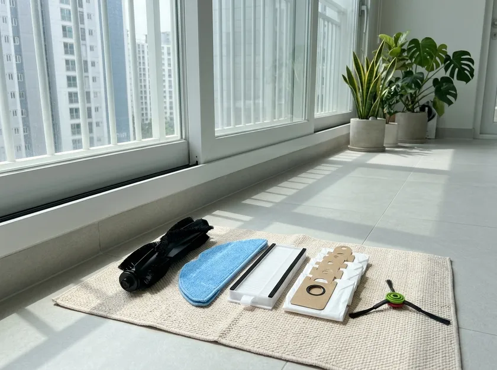

에브리봇 (EVERYBOT)
에브리봇 Q3 PLUS 1년 세트 구성과 원형 물걸레·더스트백·브러시 관리법
글·구성: 제이상점 · 기종별 1:1 호환 실물 점검 · 교체 주기 비교표 · 스마트스토어 패키지 안내

핵심 관리 · 선택 체크포인트
- 흡입과 물걸레 청소를 함께 수행하는 에브리봇 Q3 PLUS는 바닥을 닦는 원형 물걸레 패드와 스테이션 먼지봉투, 필터를 주기에 맞춰 교체해 주면 언제나 깔끔한 청소 성능을 유지할 수 있습니다.
- 그레이 원형 물걸레 패드와 슬라이딩 칼라 먼지봉투 점검: Q3 PLUS는 도톰한 원형 극세사 물걸레 패드와 흰색 사각 칼라 먼지봉투, 주황 포인트 롤러 브러시를 사용합니다.
- 1년 패키지 구성품과 기종별 옵션 확인표: 상세페이지에서 에브리봇 Q3 PLUS 전용 1년 패키지 포함 수량과 선택 옵션을 확인해 보세요.
- 베란다 건조 랙과 다용도실 수납함으로 정돈하는 예비 부품: 세탁한 원형 물걸레 패드와 물세척 필터는 통풍이 잘되는 선반에서 말리고, 새 먼지봉투와 사이드브러시는 수납함에 깔끔하게 모아 두면 필요할 때 바로 꺼내 교체할 수 있습니다.
- 세척한 필터를 다시 장착하기 전 확인할 건조 시간은 필터 세척 후 24시간 건조 안내에서, 먼지봉투 여분과 채워진 상태를 함께 점검하는 법은 더스트백 여분과 봉투 상태 확인하기에서 살펴보실 수 있습니다.
실물 부품 디테일 · 관리 구성 이미지



부품 규격 · 점검 기준표
| 확인 항목 | 부품·옵션 특징 | 점검·선택 포인트 |
|---|---|---|
| 메인브러시·사이드브러시 | 주황·검정 V자 롤러 브러시 + 3발 사이드브러시 | 회전축 머리카락 제거 및 사이드브러시 솔 변형 확인 |
| 원형 극세사 물걸레 패드 | 벨크로 부착식 그레이 원형 패드 | 세탁 후 그늘에서 바짝 말려 2매 동시에 교대 장착 |
| 먼지봉투·헤파필터 | 사각 플라스틱 칼라 더스트백 + 직사각 필터 | 필터 완전 건조 후 장착 및 먼지봉투 가이드 끝까지 삽입 |
💡 교체 주기가 겹치는 필터·브러시·물걸레·더스트백은 단품 배송비를 여러 번 내기보다 에브리봇 Q3 PLUS 기간별 세트(3개월·6개월·1년)로 미리 구비해 두면 물세척 후 24시간 교대 건조까지 끊김 없이 관리할 수 있습니다.
자주 묻는 질문 (FAQ)
Q. 에브리봇 Q3 PLUS 1년 세트 구성과 원형의 메인브러시·사이드브러시 규격과 관리 기준은 무엇인가요?
A. 주황·검정 V자 롤러 브러시 + 3발 사이드브러시 규격을 사용하며, 회전축 머리카락 제거 및 사이드브러시 솔 변형 확인 기준으로 점검·교체하면 청소 효율을 안정적으로 유지할 수 있습니다.
Q. 에브리봇 Q3 PLUS 1년 세트 구성과 원형의 원형 극세사 물걸레 패드 규격과 관리 기준은 무엇인가요?
A. 벨크로 부착식 그레이 원형 패드 규격을 사용하며, 세탁 후 그늘에서 바짝 말려 2매 동시에 교대 장착 기준으로 점검·교체하면 청소 효율을 안정적으로 유지할 수 있습니다.
Q. 에브리봇 Q3 PLUS 1년 세트 구성과 원형의 먼지봉투·헤파필터 규격과 관리 기준은 무엇인가요?
A. 사각 플라스틱 칼라 더스트백 + 직사각 필터 규격을 사용하며, 필터 완전 건조 후 장착 및 먼지봉투 가이드 끝까지 삽입 기준으로 점검·교체하면 청소 효율을 안정적으로 유지할 수 있습니다.
제이상점 1:1 검수 추천 패키지 · 구매 안내
메인 추천 구성
대표 구성 참고가 71,900원대 (옵션·쿠폰별 스마트스토어 결제 화면 기준)
1년 세트 (세제 미포함)6개월 세트 (세제 미포함)3개월 세트 (세제 미포함)
☑️ 주문 전 확인해 두면 좋은 제이상점 안심 포인트
· 기종별 1:1 전용 규격 검수: 모델명·연식에 맞는 호환·정품 구성을 검수해 오주문 불안을 줄였습니다.
· 해외직배송 미리 주문 팁: 중국 구매대행·해외직배송 상품이므로 마지막 여분 1개를 꺼내 쓰는 시점에 개인통관고유부호와 함께 여유 있게 주문해 두시면 훨씬 경제적인 비용으로 끊김 없이 교체하실 수 있습니다.
· 기종별 1:1 전용 규격 검수: 모델명·연식에 맞는 호환·정품 구성을 검수해 오주문 불안을 줄였습니다.
· 해외직배송 미리 주문 팁: 중국 구매대행·해외직배송 상품이므로 마지막 여분 1개를 꺼내 쓰는 시점에 개인통관고유부호와 함께 여유 있게 주문해 두시면 훨씬 경제적인 비용으로 끊김 없이 교체하실 수 있습니다.
📖 더 많은 가정 내 사용 스토리와 상세 후기가 궁금하시다면
📱 네이버 블로그 모바일 원문 보기 ↗